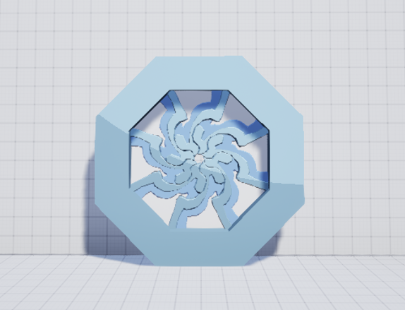
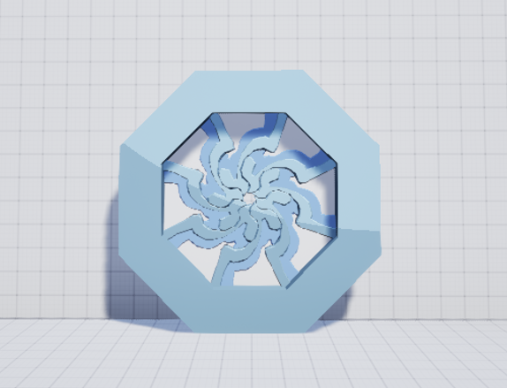

Duolatera
An online VR 2-players co-op puzzle game.
Overview
This is an online VR 2-players co-op puzzle game.
In this game, 2 players will connect through their Steam accounts and work together to solve a series of puzzles in a VR environment.
Players will traverse through the overworld and the underworld using laser triggered portals and find their way back to earth by interacting with various devices.
Project Website: Duolatera
Try it out here:
Google Drive Download
Here is the gameplay video for Act1 & Act2. ↓
Duration
5 months, 2024.8 - now
Team Size
5
My Role
Technical Artist, Gameplay/Graphics Programmer
Tools and Environment
Unreal Engine 5, C++, HLSL, Forward Rendering
Shaders
Global Cel-Shading
The overall art style of Duolatera is low-poly and cartoonish, therfore, we decided to use cel-shading as our render style.
Due to multiple reasons such as framrates and Duolatera being a VR game, we use forward shading as our rendering pipeline(default UE5 VR setting).
Normally, cel-shading in deffered rendering is achieved by accessing the G-Buffer for various data and applying post-process effect on the whole scene.
Using forward rendering means that there is no G-Buffer for me to use and therfore I have to find another way around.
In order to achieve the cel-shading effect, I replicated the phong model and created a material function that converts the input color to cel-shading color. Artists can easily use it on any object they want or even any part of the texture they want.
For example, they can use cel-shading color for a part of a prop but preserve other textures on the prop. The Pistol on the right is an example.
 

Portal VFX Between 2 Worlds
One of the main mechanisms of Duolatera is Portals. Portals exist through out the whole gameplay and they always appear in pairs. If a portal exists in the Overworld, a corresponding portal must also exists in the Underworld on the same spot. Players travel between worlds through these portals to solve the puzzles.
Portals are all closed by default and are triggered only by "tagging" with laser tools. Here is a triggered portal in the Overworld and its corresponding portal in the Underworld.
The portal shader consists of 2 different materials: A base material and an overlay material.
Base portal material is the scene texture captured by invisible cameras from the corresponding portal resulting in the "seethrough" effect.
Overlay portal material is the VFX part of the material. It consists of distortion, "vortex" effects and allows customizations during spawning. Since portal VFX looks different in Overworld and Underworld, their materials are spawned when portals are triggered open.

Overworld Portal

Underworld Portal
Visual Indication Shaders
Introduction